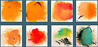

|
ESCENOGRAFÍA:
|
| "SANTA PERPETUA"
de Laila Ripoll. Cía. Micomicón 2011. |
|
| |
| |
|
 |
ESCENOGRAFÍA:
|
| "SUMERGIRSE
EN EL AGUA" de Gonzala Martín Scherman. Cía
Factoría
Teatro. 2010. |
|
| |
| |
|
|
|
ÚLTIMA EXPOSICIÓN:
|
 |
IX
FERIA DEARTE CONTEMPORÁNEO Palacio
de Congresos de Madrid |
| Arturo Martín Burgos retoma
la iconografía medieval con la serie titulada Fragmentos
de una batalla, basada en un manuscrito ilustrado del siglo XIV.
Fecha:
18 – 22 de febrero de 2010
Lugar: Palacio de Congresos de Madrid, Pº de la
Castellana 99.
Descarga
Resumen fotográfico Feria DEARTE 2009 en .pdf
SOLICITA
+ INFORMACIÓN Y PRECIOS AQUÍ
|
| Fragmentos
de una batalla |
|
|
|
| EXPOSICIÓN.
|
 |
"RESPLANDORES"
en Madrid
Del 5 al 28 de Febrero de 2009
- Obra reciente. Pinturas sobre ÉCLAIRS SUR
L´AU-DELÀ. Música de Olivier Messiaen |
Después
de su exposición en el Museo de Huelva el pasado mayo 08
llega ahora a Madrid.
SOLICITA + INFORMACIÓN Y PRECIOS AQUÍ
| (+)
Ver Obra Reciente |
|
|
| ESCENOGRAFÍA
. |
|
|
|
|
EXPOSICIÓN. Del 7 al 25
de mayo de 2008 . Huelva |


(+)
Ver Obra Reciente |
"RESPLANDORES"
Del 7 al 25 de mayo de 2008, Huelva. |
|
| Obra reciente. Pinturas sobre
ÉCLAIRS SUR L´AU-DELÀ. Música de Olivier
Messiaen |
| Ver
invitación |
Ver
Prensa
| Ver
Vídeo
| Descarga Catálogo
| |
| Lugar: |
| Sala Siglo XXI.
Museo de Huelva (Diputación de Huelva) Alameda
Sundheim, 13. 21003. Huelva. |
| Horarios Del
7 al 25 de mayo de 2008: |
| ·
Lunes: cerrado. |
| ·
Martes: de 14.30 a 20.30 horas. |
| ·
Miércoles a sábado: de
9.00 a 20.30 horas. |
| ·
Domingos: de 9.00 a 14.30 horas. |
| ·
Festivos abiertos: de 9.00 a 14.30 horas. |
|
| |
SOLICITA +
INFORMACIÓN Y PRECIOS AQUÍ
|
|
|
| EXPOSICIÓN.
Del 4 al 19 de abril de 2008. Elda,
Alicante. |
 |
- Última Exposición
- "INTIMIDAD".
|
| Sala
de Exposiciones de la Casa Grande del Jardín de la Música.
Elda, Alicante.
Del 4 al 19 de abril de 2008. |
| |
Intimidad
|
|
|
| NOTICIA
|
|
|
|
| NOTICIA
|
 |
EXPOSICIÓN
PERMANENTE :
40 cuadros
de tema musical: Messiaen y Webern
CAROLI HEALTH CLUB. - Hotel Westin Valencia
Amadeo de Saboya, 16, 46010 Valencia
|
| |
| Música
| |
|
|
| Acerca
de Arturo Martín Burgos |
|
Arturo Martín
Burgos:
Licenciado en Bellas Artes por
la Universidad Complutense de Madrid en 1985. Profesor de Pintura
en la Universidad Popular de Alcobendas.--
|
| |
Leer
mas (+) |
|
|
|
Qué han dicho
:
A lo largo de su carrera artística
son muchas las reseñas, críticas, entrevistas.
no dejes de leer lo que......
|
| |
Leer
mas (+) |
|
|
| Artísta
prolífico. |
|  |
Arturo Martín
Burgos:
Con una extensa y prolífca
obra, no ha dejado ninguna de las facetas de las artes pásticas
por trabajar ...
|
| |
Intimidad | Música
| Objetos
| Escenografías
| |
|
|